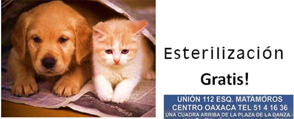

Eventos Proximos
3 comments Participa!
Existen muchos motivos para esterilizar a sus mascotas, éstos van desde la prevención de enfermedades hasta la prevención de una sobrepoblación de animales. Ven y participa en esta campaña, recuerda “no abandones esteriliza” los perros y los gatos no son de la calle son de gente irresponsable.